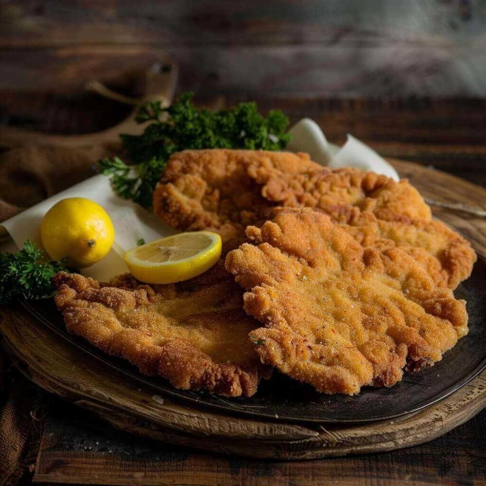

Traditionelle Wiener Küche seit 1977
Echte Wiener Gastfreundschaft im Herzen der Altstadt.
Klassisches Wiener Schnitzel, Tafelspitz und hausgemachte Hausmannskost – direkt in der Gluckgasse unweit der Albertina.
- Heute
- 11:00 – 23:00
- Warme Küche
- Mo – Fr · 11:30 – 22:00
- Im Sommer
- Schanigarten in der Gluckgasse

Täglich frischOriginal Wiener Schnitzel
Vom Kalb mit gemischtem Salat
26,40 €
Unsere Geschichte
Gemütlich, bodenständig & typisch Wienerisch
Das Gasthaus Reinthaler wird seit 1977 als Familienbetrieb geführt und bietet klassische Wiener Küche im Herzen der Altstadt an – unweit der Kärntner Straße, des Dorotheums und der Albertina.
Ob zum täglichen Mittagsmenü oder auf ein kühles Bier im Schanigarten: Bei uns genießen Sie durchgehend warme Küche in gemütlicher Atmosphäre.
Kontakt
Kontakt & Anfahrt
So finden Sie uns im Herzen von Wien
-
Telefon
+43 1 512 33 66 -
E-Mail
gasthaus.reinthaler@gmx.at -
Adresse
Gluckgasse 5, 1010 Wien, Austria
-
Öffnungszeiten
Mo – Fr 11:00 – 23:00 Uhr
Warme Küche 11:30 – 22:00 · an Feiertagen geschlossen
Anfahrtsbeschreibung
Unser Gasthaus liegt mitten im 1. Bezirk – nur wenige Schritte von der Kärntner Straße, dem Dorotheum und der Albertina entfernt. Mit den öffentlichen Verkehrsmitteln sind wir bequem erreichbar: Die U-Bahn-Stationen Stephansplatz (U1, U3) und Karlsplatz (U1, U2, U4) liegen nur wenige Gehminuten entfernt.